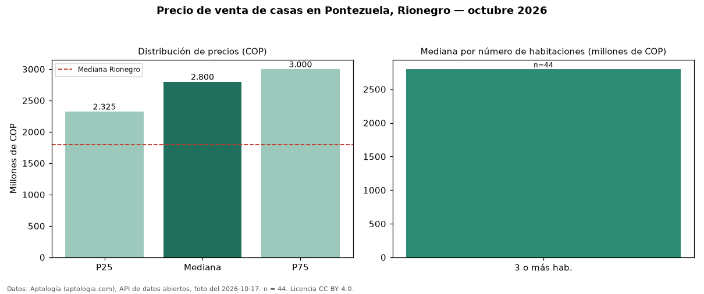

Precio de venta de casas en Pontezuela, Rionegro — octubre 2026
En Pontezuela, Rionegro, la mediana de precio de venta de casas es COP 2,80 mil millones, según 44 avisos vigentes. Comparado con la mediana de la ciudad, COP 1,80 mil millones, la diferencia es de 56 % por encima. Con la mediana de arriendo del mismo barrio (COP 7.900.000 al mes), el arriendo anual equivale a 3,4 % del precio de venta: una aproximación gruesa a la rentabilidad bruta, porque compara medianas de ofertas distintas. El segmento con más oferta es el de 3 o más habitaciones (44 avisos, mediana COP 2,80 mil millones). 95 % de los avisos incluye parqueadero. Por mediana, es el puesto 4 de 13 barrios de Rionegro con al menos 30 avisos de casas en venta: en la franja media. El aviso más barato pide COP 610 millones y el más caro COP 4,50 mil millones. Datos: Aptología (aptologia.com), API de datos abiertos, licencia CC BY 4.0 — https://www.aptologia.com/casas-en-venta/rionegro/pontezuela. Archivos: PDF de 2 páginas, CSV con las cifras y gráfica PNG.

| Avisos únicos | 44 |
|---|---|
| Percentil 25 | COP 2.325.000.000 |
| Mediana | COP 2.800.000.000 |
| Percentil 75 | COP 3.000.000.000 |
Fuente: avisos vigentes de portales inmobiliarios recopilados por Aptología, deduplicados (mínimo 30 avisos únicos por celda). Precios pedidos, no cerrados. Fecha: 2026-10-18.